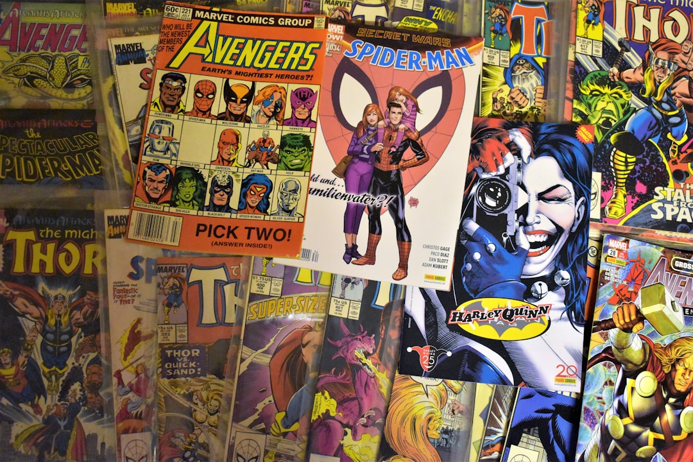

News
オンラインプラットフォーム
オンラインプラットフォーム
人気の無料マンガサイト
スマホアプリで読む方法
電子書籍サービスの比較
著作権と法律
著作権と法律
著作権侵害のリスク
合法的な無料マンガの入手方法
マンガ業界への影響
マンガのジャンルとおすすめ
マンガのジャンルとおすすめ
ジャンル別おすすめマンガ
最新の無料マンガランキング
読者レビューと評価
About Us
「あなたもできる！無料でマンガを読む魔法のステップ」
Jul 11, 2025
「あなたもできる！無料でマンガを読む魔法のステップ」 近年、インターネットの普及により、多くのコンテンツがオンラインで楽しめるようになりました。その中でも特に人気があるのがマンガです。しかし、マンガを購入するにはお金がかかることが多く、毎回買うとなると出費がかさみます。そこで今回は、「無料でマンガを読む魔法のステップ」についてご紹介します。 まず最初に知っておきたいのは、多くの出版社やプラットフォームが公式に無料で提供しているマンガがあります。これらは期間限定であったり、一部のエピソードのみ無料だったりしますが、それでも十分に楽しむことができます。有名な例として、LINEマンガやピッコマなどがあります。それぞれ独自の強みを持っており、新作から過去の名作まで幅広いジャンルをカバーしています。 次に活用したいのは、図書館です。意外かもしれませんが、多くの公共図書館では電子書籍サービスを導入しており、その中にはマンガも含まれています。図書館カードさえ持っていれば、自宅から簡単にアクセスできるため、とても便利です。また、直接図書館に行けば紙媒体でもたくさんのマンガを借りることができます。 さらに、一部のアプリやウェブサイトでは広告を見ることでポイントを獲得し、そのポイントでマンガを読むことができる仕組みがあります。少し手間はかかりますが、お金を使わずに済むのでおすすめです。ただし、安全性には注意しましょう。公式なプラットフォーム以外からダウンロードする場合はウイルス感染などリスクも伴うため、信頼できるサイトのみ利用することが重要です。 最後に、大切なのは作者への敬意です。無料で読めるからといって、その作品への感謝やリスペクトは忘れてはいけません。本当に気に入った作品には、ぜひ購入という形で応援しましょう。それによって作者も新たな作品制作へと繋げられる可能性があります。 このようにして、「あなたもできる！無料でマンガを読む魔法のステップ」を踏むことで、お財布にも優しく、楽しい時間を過ごすことができます。ただし、その際には正規ルートからアクセスすること、安全性を考慮すること、そして作者への感謝を忘れないよう心掛けましょう。それこそ、本当の意味で「魔法」のひとつと言えるでしょう。
「どうしてこの方法で無料でマンガが読めるのか？」
Jul 11, 2025
「どうしてこの方法で無料でマンガが読めるのか？」について考える 現代のデジタル社会において、インターネットを利用することで多くの情報やコンテンツにアクセスできるようになりました。その中でも特に人気なのが、マンガです。日本発祥の文化として世界中で愛されているマンガですが、最近では無料で読むことができる方法も増えています。本稿では、「どうしてこの方法で無料でマンガが読めるのか？」という疑問について考えてみたいと思います。 まず、無料で提供されるマンガプラットフォームの背景には広告モデルがあります。多くの場合、これらのプラットフォームは広告収入によって運営されています。ユーザーがマンガを読む際に表示される広告を通じて収益を得ているため、ユーザーは実質的に無料でコンテンツを楽しむことができます。このビジネスモデルはテレビやYouTubeなど、多くのメディアでも一般的です。 次に、プロモーション目的やマーケティング戦略として無料で提供されるケースもあります。一部の出版社や作家は、新しい作品やシリーズを広めるために最初の数話を無料公開することがあります。これによって多くの人々に作品を知ってもらい、その後有料版や関連商品へと誘導する狙いがあります。この手法は、消費者側にも新しい作品との出会いを提供し、作家側にもファン層拡大というメリットがあります。 また、一部ではクラウドファンディングや寄付によって支援されたプロジェクトとして提供されているものもあります。この場合、コミュニティ全体から資金を集めて制作されたコンテンツが公開されます。ここでは応援したい作家や作品への直接的な支援として寄付する文化が根付きつつあり、それによって良質なコンテンツが生まれ続けています。 最後に、一部非公式な手段として海賊版サイトも存在します。しかしながら、このような方法は著作権侵害となり、多くの場合法律違反となります。クリエイターたちへの正当な報酬なしには文化の発展は望めませんので、この点については注意が必要です。 以上のように、「どうしてこの方法で無料でマンガが読めるのか？」という問いには様々な要因があります。それぞれ異なるビジネスモデルや戦略によって成り立っていますが、大切なのはクリエイターへの適切な対価と健全な市場環境を維持することです。このバランスを保ちながら、多くの人々が安心して楽しめる環境づくりこそ重要だと言えるでしょう。
「どうやって無料でマンガを読む方法を発見したのか？」
Jul 11, 2025
タイトル: 無料でマンガを読む方法を発見した経緯 私は、学生時代にマンガが大好きで、毎日のように新しい作品を探していました。しかし、限られたお小遣いの中で全ての作品を購入するのは難しく、「どうやって無料でマンガを読むことができるのか」と常に考えていました。ここでは、その過程で私がどのようにして無料でマンガを読む方法を発見したかについてお話ししたいと思います。 まず最初に試みたのは、図書館でした。地元の図書館には思った以上に多くのマンガが揃っていて、新作こそ少なかったものの、多くの名作や過去の人気作品が借りられることがわかりました。図書館では貸出期間も長いため、一気読みする必要もなく、自分のペースで楽しむことができました。ただし、新刊や最新巻はどうしても手に入らないという課題もありました。 次にインターネット上で合法的なウェブサイトを探しました。多くの出版社や電子書籍プラットフォームでは、プロモーションとして一部または全巻無料公開されていることがあります。また、連載中の作品の第1話のみ無料公開されているケースもありました。これらを利用することで、多くの場合、新たな作品との出会いにもつながりました。 さらに、友人との交流も重要な手段となりました。友人同士でそれぞれ所有しているマンガを貸し借りすることで、多くの作品に触れる機会が増えました。この方法では、お互いに好きな作品について語り合うこともでき、一層楽しさが広がりました。 最後に、公式アプリやサイトによるキャンペーン情報にも注目しました。一部アプリではポイント制や広告視聴による無料閲覧サービスがあります。これらは時間と労力を要しますが、安全かつ正規ルートであるため安心感があります。 結論として、無料でマンガを読むためには様々な方法があります。それぞれ利点と欠点がありますので、自分自身の日常生活や趣味嗜好に合った方法を選ぶことが大切です。そして何より重要なのは、著作権違反など不正行為には決して手を染めず、公正かつ誠実な形でマンガ文化を楽しむ姿勢です。この体験から得た教訓は、今後も私自身大切にしていきたいと思っています。
「実は簡単？無料で好きなマンガを読む方法」
Jul 11, 2025
「実は簡単？無料で好きなマンガを読む方法」 マンガは多くの人々に愛されている日本の文化の一部です。ストーリー性や絵の美しさ、キャラクターたちの魅力が詰まったマンガは、子供から大人まで幅広い年齢層に楽しまれています。しかし、毎月新しいタイトルを購入するとなると、少しお財布が痛むこともありますね。そこで今回は、無料で好きなマンガを読む方法について紹介します。 まず最初に考えたいのは、公立図書館です。意外かもしれませんが、多くの図書館では人気マンガを所蔵しており、貸し出しサービスも行っています。特に大型の都市部の図書館には豊富なラインナップがありますので、一度自分の住んでいる地域の図書館を訪れてみることをおすすめします。また、予約システムが整っているところも多いため、お目当ての作品が借りられていても安心です。 次に注目したいのが、公式アプリやウェブサイトです。最近では、多くの出版社が自社作品を期間限定で無料公開するキャンペーンを行っています。例えば、「ジャンプ＋」や「マガポケ」といったアプリでは、新作だけでなく過去の名作も楽しむことができます。また、一話ずつ日替わりで無料配信される作品もあるため、毎日の楽しみとして利用することも可能です。 さらにインターネット上には、多数の合法的なウェブサイトがあります。「Pixivコミック」や「comico」はその代表格と言えるでしょう。これらはユーザー投稿型プラットフォームでもあり、新進気鋭の作家たちによるオリジナル作品を楽しむ機会にも恵まれます。ただし、中には違法アップロードされたコンテンツを扱うサイトも存在するため、安全面には十分注意しましょう。 最後に忘れてはいけないポイントとして、お友達とのシェアがあります。それぞれ異なるマンガを購入し合って交換読みすることで、新しい発見や共通のおしゃべりネタにも事欠きません。このような形で読書体験を共有することで、より深い楽しみ方ができるでしょう。 このように見ると、一見難しく思える「無料で好きなマンガを読む」という課題も、多様な選択肢によってクリアできそうですね。ただ注意すべきは、その方法が法律および倫理的に正しいかどうかという点です。正規ルートで得られる喜びこそ、本当に心から楽しめるものだと思います。それでは皆さん、それぞれのお気に入り作品との素敵な出会いがありますように！
「無料でマンガを楽しむための秘密のテクニックとは？」
Jul 11, 2025
「無料でマンガを楽しむための秘密のテクニックとは？」 近年、デジタル化が進む中、多くの人々がスマートフォンやタブレットを使って手軽にマンガを楽しんでいます。しかし、購入するには少なからず費用がかかることも事実です。そんな中、「無料でマンガを楽しむ方法はないものか？」と考える方も多いでしょう。ここでは、合法的かつ効果的に無料でマンガを楽しむためのテクニックをご紹介します。 まず最初に注目したいのが、公式アプリやウェブサイトです。多くの出版社やプラットフォームは、新しい読者を獲得するために、一部作品やエピソードを期間限定で無料公開しています。例えば、「少年ジャンプ＋」や「コミックDAYS」などは定期的に人気作品の一話から数話を無料で提供しており、それらを活用することで様々な作品に触れることができます。 次に、図書館の利用もおすすめです。意外かもしれませんが、多くの公共図書館では電子書籍サービスを提供しており、その中にはマンガも含まれています。このサービスを利用すれば、自宅にいながら多種多様な作品を借りて読むことが可能です。また、紙媒体でも豊富なラインナップが揃っているので、直接訪れてみる価値があります。 さらに、お得情報として知っておいてほしいのがキャンペーン情報です。特定の日やイベント時期には、多くのアプリやウェブサイトで大規模なセールスプロモーションが行われます。このタイミングでは普段有料となるエピソードも無料公開されることがあり、見逃さないよう注意深くチェックすることがおすすめです。 最後に挙げたいのは、SNSやコミュニティサイトで共有される情報です。熱心なファンたちによって、有益な情報や新作リリース当初だけ公開される特別エピソードなどについてシェアされることがあります。同じ趣味を持つ仲間との交流は、新たなお気に入り作品との出会いにも繋がります。 以上述べたように、合法的にそして賢く工夫すれば、多額のお金を払わずとも充実したマンガライフを送ることは十分可能です。それぞれの方法を組み合わせて、自分だけのお気に入りスタイルで楽しくマンガ鑑賞してください。
「知っておくべき！無料でマンガを手に入れる驚きの方法」
Jul 11, 2025
近年、デジタル化の進展により、私たちのエンターテインメントの楽しみ方も大きく変わりました。特にマンガは、多くの人々にとって日常生活の一部となっており、いつでもどこでも手軽に楽しめるコンテンツとして愛されています。しかし、購入するとなると費用がかさむこともあり、「無料でマンガを手に入れる方法はないだろうか？」と考える人も少なくありません。そこで今回は、「知っておくべき！無料でマンガを手に入れる驚きの方法」について紹介したいと思います。 まず最初に注目したいのが、公式アプリやウェブサイトです。多くの出版社やマンガ配信サービスは、自社作品を広めるために期間限定で無料公開するキャンペーンを行っています。これらのキャンペーンは、新しい作品やシリーズを試し読みしてもらうためのものですが、その内容は非常に充実しています。例えば、有名なマンガアプリでは、一日に読める話数が限定されているものの、毎日ログインすることでポイントが貯まり、そのポイントを使って無料で読むことができます。 次に挙げたい方法は、図書館です。「えっ、図書館？」と思われるかもしれませんが、多くの公共図書館では電子書籍サービスを提供しており、その中には人気マンガも多く含まれています。利用者登録を行えば、自宅からでもオンラインで借りることができ、期限内なら何度でも読むことが可能です。また、新刊だけでなく古典的な名作にも出会えるチャンスがあります。 さらに、SNSやコミュニティサイトも見逃せません。一部のマンガ家やクリエイターは、自分たちの作品をSNS上で無料公開しています。それによってファンとの交流が深まり、新たな支持層を獲得できるという利点があります。また、ファン同士が集まるコミュニティサイトでは、おすすめ作品や感想など情報交換が活発で、新しいお気に入り作品を見つけるヒントになるでしょう。 ただし注意すべき点として、不正な手段でコンテンツを取得することは絶対に避けなければなりません。違法アップロードされたコンテンツを見ることは著作権侵害につながりますし、それによってクリエイターへの利益還元も妨げられてしまいます。合法的な手段で楽しむことで業界全体を支えることにもつながります。 結論として、「無料」で「安全」にマンガを楽しむためには、公式サービスや図書館など信頼できるソースからアクセスすることが肝要です。このような方法であれば、新しい発見もありながら安心して好きな作品と向き合うことができ、更なる読書体験へと繋げていけます。それでは皆さんもぜひ、この驚きの方法で素晴らしいマンガライフを送りましょう！
「誰も教えてくれなかった、無料でマンガを読む裏ワザ」
Jul 11, 2025
「誰も教えてくれなかった、無料でマンガを読む裏ワザ」というテーマについて考えてみましょう。まず、このような話題は非常に興味深いですが、同時に倫理的な側面も含んでいます。 マンガは日本の文化の一部であり、多くの人々に愛されています。しかし、その制作には多くの時間と労力がかかっています。作家や出版社は作品を世に送り出すために、多大な努力をしています。そのため、本来ならば正当な対価を支払って楽しむべきものです。それでも、無料で読む方法があるという噂が絶えないのは事実です。 インターネット上には、公式ではない形でマンガを閲覧できるサイトが存在します。しかし、これらのサイトはしばしば著作権を侵害しており、その利用は違法です。法律的にも問題がありますし、何よりもクリエイターへの敬意を欠いている行為と言えるでしょう。 それでは、「裏ワザ」としてどのような方法があり得るのでしょうか。一つ考えられるのは、公立図書館やオンライン図書館サービスです。これらは合法的にマンガを借りて読むことができる場所です。また、一部の出版社やプラットフォームでは、期間限定で無料公開されている作品もあります。このような機会を利用することで、安全かつ合法的にマンガを楽しむことができます。 さらに、近年では定額制サービスも普及しています。月額料金を支払うことで、多数のマンガ作品を読み放題になるサービスもあります。これらは非常に便利でありながら、作家や出版社にも収益が回る仕組みとなっています。 結論として、「裏ワザ」という言葉には注意が必要です。本当に楽しむためには、法と倫理を遵守した上で、自分自身と作家たち両方が満足できる方法を選ぶことが重要です。それこそが本当の意味で賢い選択なのではないでしょうか。
オンラインで無料のマンガサイトとは？
Jul 11, 2025
オンラインで無料のマンガサイトとは？ 近年、インターネットの普及により、私たちの生活は大きく変わりました。その中でも特に注目されているのが、オンラインで提供される様々なサービスです。中でも「オンラインで無料のマンガサイト」は、多くのマンガ愛好者にとって欠かせない存在となっています。では、この「オンラインで無料のマンガサイト」とは一体何なのでしょうか。 まず、「オンラインで無料のマンガサイト」とは、インターネット上でマンガを無料で読むことができるウェブサイトを指します。これらのサイトでは、新旧問わず様々なジャンルや作品が揃っており、ユーザーは自分の好きな作品を好きな時に楽しむことができます。また、多くの場合、スマートフォンやタブレットなど様々なデバイスに対応しているため、外出先でも簡単にアクセスすることが可能です。 次に、このようなサイトが人気を集める理由について考えてみましょう。一つ目は、その利便性です。従来、マンガを読むためには書店へ行ったり、本を購入したりする必要がありました。しかし、オンラインならばその場で読みたい作品をすぐに見つけることができるため、大変便利です。 二つ目は経済的なメリットです。多くの人が知っているように、日本国内では新刊マンガ本は比較的高価です。しかし、オンラインであれば無料で読める作品も多いため、お金を節約しながら多くの作品に触れることができます。 三つ目として、多様性があります。オンラインプラットフォームでは、自費出版された作品やインディーズ作家によるユニークな作品も数多く掲載されています。このため、大手出版社から出版されないような個性的な作品とも出会える機会があります。 しかしながら、「オンラインで無料のマンガサイト」にはいくつか注意点もあります。一部には海賊版と呼ばれる違法アップロードされたコンテンツも存在し、それらを見ることは法律違反となります。そのため、安全性や合法性について十分注意し、信頼できる公式パートナーシップまたは公認されたプラットフォームを利用することが重要です。 結論として、「オンラインで無料のマンガサイト」は現代社会において非常に魅力的なエンターテイメントオプションと言えます。ただし、その利用には一定のリスクも伴うため、安全意識を持ちながら賢明に選択することが求められます。こうしたサービスを正しく活用し、多様な文化やストーリーを楽しむことで、私たちの日常生活はさらに豊かなものになっていくでしょう。

マンガを無料でダウンロードする方法は？
Jul 11, 2025
マンガを無料でダウンロードする方法は？という質問は、多くの人がインターネット上で検索しているテーマの一つです。しかし、まず最初に強調しておきたいのは、著作権法に違反しないように注意することが重要だという点です。日本では、マンガは著作物として保護されており、無断でのダウンロードや配布は法律で禁じられています。したがって、合法的な方法を選択することが必要です。 さて、合法的にマンガを楽しむための方法はいくつかあります。その一つに、公認されたウェブサイトやアプリを利用する方法があります。例えば、「少年ジャンプ＋」や「comico」など、日本国内外で人気のあるプラットフォームでは、一部の作品を期間限定で無料公開していることがあります。これらのサービスを利用すれば、安全かつ合法的にマンガを楽しむことができます。 また、多くの電子書籍ストアでは、新規ユーザー向けに無料トライアルやポイントキャンペーンを実施しています。これらを活用すれば、お気に入りの作品を安価または無料で読む機会が増えます。ただし、この場合も著作権者への正当な対価が支払われる仕組みとなっていますので安心です。 さらに、公共図書館も見逃せない選択肢です。一部の図書館では電子書籍としてマンガを借りることができるサービスがあります。この場合ももちろん合法的ですし、新たな作品との出会いにも繋がることでしょう。 最後になりますが、「無料」という言葉には常にリスクと責任が伴います。不正な手段によるダウンロードは避け、自分自身とクリエイター双方への敬意を持って行動することが大切です。マンガ文化を支えるためにも、私たちは合法的かつ倫理的な方法で楽しむ努力を続けていくべきでしょう。
学生向け無料マンガサービス比較
Jul 11, 2025
学生向け無料マンガサービス比較 近年、インターネットの普及に伴い、様々なマンガサービスが登場しています。特に学生にとっては、限られた予算の中でどのように楽しむかが大きな関心事です。そのため、無料で利用できるマンガサービスは非常に人気があります。本稿では、学生向けの無料マンガサービスについて比較し、それぞれの特徴を詳しく見ていきたいと思います。 まず最初に紹介するのは、「LINEマンガ」です。LINEマンガは、多くの日常的なコミュニケーションツールとして利用されているLINEアプリ内でアクセスできるため、とても便利です。毎日更新される無料話数や、一部作品を期間限定で全巻無料とするキャンペーンなどが魅力的です。また、ポイントを貯めて有料作品も楽しめる仕組みがあり、多様な作品を手軽に読むことができます。 次に「ピッコマ」を取り上げます。このサービスは「待てば0円」というユニークなシステムが特徴です。一定時間待つことで次のエピソードを無料で読むことができるため、自分のペースで楽しむことができます。また、韓国発祥ということもあり、日本国内ではあまり知られていない独自の作品も多く揃っています。新しいジャンルや作風に触れたい学生にはぴったりでしょう。 さらに、「少年ジャンプ＋」も見逃せません。これは集英社が提供している公式アプリで、『ONE PIECE』や『僕のヒーローアカデミア』など人気タイトルを定期的に無料公開しています。また、新人作家によるオリジナル作品も豊富なので、新しい才能を発掘したい人にもおすすめです。有料会員になるとさらに深く楽しめる内容ですが、無料部分だけでも十分楽しめます。 最後に「マガポケ」を紹介します。このサービスは講談社によって提供されており、『進撃の巨人』や『東京卍リベンジャーズ』など、有名タイトルを多数掲載しています。「待たずに1話目から読める」キャンペーンや、一部作品をコインなしで読める機能など、柔軟な料金体系が特徴です。また、新作情報やイベント情報も充実しており、一歩先行く情報通になれるかもしれません。 これら各サービスには、それぞれ異なる強みがあります。選ぶ際には、自分自身の好みやライフスタイル、お気に入り作家や作品の存在などを考慮すると良いでしょう。そして何より大切なのは、どんな形でも読書そのものを楽しむ心でしょう。学生生活という貴重な時間を彩る一助となれば幸いです。それでは、ご自身のお気に入りマンガ探しの旅へ出発しましょう！
広告なしで楽しむ無料マンガの方法
Jul 11, 2025
広告なしで楽しむ無料マンガの方法 現代社会において、インターネットは私たちの日常生活に欠かせない存在となっています。その中でも、マンガは多くの人々にとって楽しみや癒しを提供する重要なコンテンツです。しかし、多くのオンラインプラットフォームでは広告が頻繁に表示され、読書体験を妨げることがあります。そこで今回は、広告なしで無料でマンガを楽しむ方法について考えてみたいと思います。 まず一つ目の方法として、公立図書館のデジタルサービスを利用することが挙げられます。近年、多くの図書館がデジタル化を進めており、インターネット経由で電子書籍や電子マンガを借りることができるようになっています。このサービスを利用すれば、広告に煩わされることなく、高品質な作品を楽しむことができます。また、新作や人気作品も定期的に更新されるため、飽きることなく新しい発見ができるでしょう。 次に紹介したいのは、出版社や作家自身が運営している公式サイトやアプリです。これらのプラットフォームでは、自分たちの作品を広めるために無料で公開している場合があります。特に、新人作家や独立系クリエイターによる作品は、このような場で多く見つけられます。もちろん、一部にはプロモーション目的で期間限定公開の場合もありますが、それでも十分な価値があります。 さらに、一部のSNSプラットフォームも注目です。TwitterやInstagramなどでは、多くの漫画家やイラストレーターが自分たちの作品を投稿しています。それらは短編や4コマ漫画として手軽に読むことができ、広告なしで気軽に楽しめます。また、その場で作者と直接交流する機会もあるため、新たなファンコミュニティへの参加にもつながります。 最後になりますが、大切なのは正規ルートからアクセスすることであり、不正ダウンロードサイトなどには決して手を出さないことです。不正サイトではウイルス感染などのリスクもあり、安全性が損なわれます。また、作者への正当な報酬も行き渡らず、長期的には文化全体への悪影響となります。そのため、安全かつ持続可能な方法でマンガ文化を楽しむ意識を持つことが重要です。 以上述べたように、広告なしで無料マンガを楽しむ方法はいくつか存在します。どれも少し工夫すれば簡単に試せるものばかりなので、自分に合ったスタイルで快適な読書時間を過ごしてください。そして、この素晴らしい文化への感謝と敬意を忘れずに、大いに充実した時間としましょう。
法的に安全な無料マンガサイトとは
Jul 11, 2025
法的に安全な無料マンガサイトとは何かについて考えることは、現代のデジタル時代において非常に重要です。インターネット上でマンガを楽しむ人々が増える一方で、違法なサイトも数多く存在しています。そのため、ユーザーとしては法律を遵守し、安全にマンガを楽しむ方法を理解する必要があります。 まず、「法的に安全な無料マンガサイト」とは、著作権者の許可を得て作品を公開しているサイトを指します。これらのサイトでは、作者や出版社との契約に基づき、正当なライセンスの下で作品が提供されています。例えば、日本国内外で人気のある大手マンガプラットフォームや出版社が運営する公式アプリやウェブサイトが該当します。これらのプラットフォームでは、新しい作品から過去の名作まで、多様なジャンルのマンガを安心して楽しむことができます。 次に、法的に安全な無料マンガサイトを利用するメリットについて考えてみましょう。一つ目は、著作権者への適切な報酬が確保されるという点です。作者や出版社は、自分たちの作品が正当に評価され、その対価として収益を得ることができます。これは新たな作品制作へのインセンティブとなり、結果として読者にも質の高いコンテンツが提供されます。 二つ目は、安全性です。違法なマンガサイトにはウイルス感染や個人情報漏洩といったリスクがあります。しかし、公式ライセンスを持つ合法的なプラットフォームでは、そのような心配はほとんどありません。また、多くの場合、高品質なビューワー機能や使いやすいインターフェースも提供されており、快適に読むことができるでしょう。 最後に、このような合法的サービスを普及させるためには社会全体で意識向上も必要です。違法アップロードされたコンテンツを見ること自体が法律違反になる可能性もあり、それによってクリエイターたちの創作活動が妨げられるという事実を多くの人々が理解する必要があります。 結論として、「法的に安全な無料マンガサイト」とは単なる娯楽提供だけでなく、文化産業全体の健全な発展にも寄与するものです。我々ユーザー一人ひとりがこの重要性を認識し、賢明な選択肢を選ぶことで、更なる良質なコンテンツ享受につながるでしょう。
海外でも使える日本語の無料マンガアプリ
Jul 11, 2025
海外でも使える日本語の無料マンガアプリについて 近年、デジタル技術の進化により、さまざまなコンテンツがオンラインで楽しめるようになっています。その中でも、日本のマンガは世界中で高い人気を誇り、多くのファンを持っています。しかし、海外に住んでいる人々が日本語のオリジナル版を手軽に楽しむことは難しい場合があります。そこで登場するのが「海外でも使える日本語の無料マンガアプリ」です。 この種のアプリは、インターネット接続さえあればどこにいても日本語でマンガを読むことができるという利点があります。特に、日本語学習者や日本文化に興味を持つ人々には非常に役立つツールです。これらのアプリはしばしば無料で提供されており、一部には広告が含まれることで収益化されています。また、有料プランによって広告なしや追加機能を利用できるオプションもあります。 さらに、こうしたアプリでは新作から名作まで幅広いジャンルの作品が揃っているため、自分好みの作品を見つけやすいという点も魅力です。そして、ダウンロード機能がある場合にはオフライン環境でも読み続けることが可能になります。このような柔軟性は、ユーザーエクスペリエンスを向上させる要因と言えるでしょう。 言語面でも特筆すべき点があります。多くの場合、日本語のみならず英語など他国の言語にも翻訳されたバージョンが用意されているため、日常的な言葉遣いやスラングにも触れながら学習することができます。このような機能は、単なる娯楽以上に教育的価値も提供していると考えられます。 しかし一方で、著作権問題や海賊版との関係について注意する必要があります。正規ライセンスを取得しているかどうか確認することは重要です。不正な手段で配信されたコンテンツは作者や出版社へ利益を還元しないため、その存在自体が業界全体への悪影響となり得ます。 まとめとして、「海外でも使える日本語の無料マンガアプリ」は、日本文化への理解を深めたり日本語能力を向上させたりする有効な方法として注目されています。しかし、その利用に際しては法律面もしっかりと把握し、公正かつ倫理的な視点から楽しむ姿勢が求められます。このようなサービスを通じて、多くの人々が気軽にマンガ文化を享受できる未来につながっていけばと思います。
無料でマンガを読む方法は？
Jul 11, 2025
無料でマンガを読む方法について 近年、デジタル化の進展に伴い、マンガを楽しむ方法も多様化しています。かつては書店や図書館に足を運び、本を手に取って読むのが一般的でしたが、今ではインターネットを利用して無料でマンガを読むことが可能になりました。今回は、そんな「無料でマンガを読む方法」について考えてみたいと思います。 まず一つ目の方法として挙げられるのが、公式なウェブサイトやアプリを利用することです。多くの出版社やプラットフォームが、自社作品の一部または全巻を期間限定で無料公開しています。例えば、「少年ジャンプ+」や「コミックDAYS」などのアプリでは、新作や過去の名作が定期的に更新され、多くの場合最初の数話は無料で読むことができます。これらは公式提供なので、安全性も高く、おすすめです。 次に、公共図書館のオンラインサービスも見逃せません。地域によっては電子書籍サービスを導入している図書館もあり、自宅からでも簡単にマンガを借りることができます。この場合、通常と同じように貸し出し期限がありますので、その点には注意が必要です。 さらに、プロモーション期間中における特典もあります。新しい作品が発売される際や映画化・アニメ化されたときには、それに合わせて関連作品が一時的に無料公開されることがあります。この機会を利用すれば、新たな作品との出会いや過去作のおさらいにも役立ちます。 ただし、一部の非公式サイトや違法アップロードされたコンテンツには注意が必要です。これらは著作権侵害となり得るばかりか、ウイルス感染などセキュリティ上のリスクも伴います。正規ルート以外からマンガを入手する行為は避けましょう。 最後に、自分自身で創造力豊かなストーリーを書いてみるという新しい楽しみ方も提案したいと思います。他者の作品からインスピレーションを受け、自分だけの物語を書いてみることで、新たな発見があります。それ自体が無料かつクリエイティブな活動と言えるでしょう。 以上述べたように、さまざまな方法で無料でマンガを楽しむことができます。ただし、正当に提供されているもののみ利用し、安全かつ健全な方法で楽しむことが大切です。そのうえで、多くの素晴らしい作品と出会えることを願っています。
無料で安全にマンガを読むには？
Jul 11, 2025
無料で安全にマンガを読むには、いくつかのポイントを押さえておくことが重要です。現在、多くの人々がインターネットを利用して手軽にマンガを楽しむことができる時代になりました。しかし、その一方で違法サイトやセキュリティの問題も存在しています。以下では、安心してマンガを楽しむための方法について考えてみましょう。 まず第一に、公式なストリーミングサービスや公式アプリを利用することが推奨されます。多くの出版社やマンガ提供サービスは、自社の作品をオンラインで合法的に配信しています。例えば、LINEマンガやピッコマなど、日本でも人気のサービスがあります。これらのプラットフォームでは、安全性が確保されているだけでなく、新しい作品も定期的に追加されます。また、無料で読める作品も多く提供されていますし、一部は期間限定で全話無料になることもあります。 次に、口コミやレビューを参考にすることも重要です。ユーザーからのフィードバックは、そのプラットフォームが安全かどうかを判断するための貴重な情報源です。他のユーザーがどのような体験をしたか知ることで、不安要素を事前に回避することができます。また、SNSやブログなどでも情報収集すると良いでしょう。 さらに、安全性確保のためにはデバイス自体にも注意が必要です。ウイルス対策ソフトウェアを導入し、常に最新状態に保つことで、不正アクセスやウイルス感染から守ることができます。また、不審なリンクや広告には注意し、それらには安易にクリックしないよう心掛けましょう。 最後に、一部の作品については図書館など公共機関も利用可能です。一部地域では電子書籍として貸し出すサービスも行われており、安全かつ無料でマンガを楽しむもう一つの選択肢となります。 以上より、無料で安全にマンガを読むためには公式サービスの活用と慎重な情報収集が鍵となります。正しく賢い選択によって、お気に入りの作品を安心して楽しむことができるでしょう。
無料で読めるおすすめのマンガは？
Jul 11, 2025
無料で読めるおすすめのマンガについて考えると、現代のデジタル時代においては、多くの素晴らしい作品がオンラインで提供されています。これらのマンガは、誰でも手軽にアクセスでき、特に予算を気にすることなく楽しむことができます。また、多様なジャンルが揃っているため、自分の好みに合った作品を見つけることも容易です。 まず、無料で読めるマンガとして挙げたいのは「ウェブトゥーン」と呼ばれる形式です。これは韓国発祥の縦スクロール型マンガで、スマートフォンやパソコンから簡単に読むことができます。「LINEマンガ」や「comico」など、日本でも多くのプラットフォームが提供されており、それぞれ独自の人気作品があります。これらのプラットフォームでは、新人作家による意欲的な作品から、大ヒットしたシリーズまで幅広い選択肢が用意されています。 次に、「少年ジャンプ＋」などのアプリも注目すべきです。このアプリでは、「ワンピース」や「ナルト」といった有名作品を始め、多くの人気連載を無料で読むことができます。特定の日に指定された話数が無料になるキャンペーンも頻繁に行われているため、タイミングをうまく利用すれば、多くのストーリーを追いかけることが可能です。 さらに、古典的な名作も忘れてはいけません。「青空文庫」のような著作権切れになった作品を集めたサイトでは、過去の名作マンガを読むことができ、その時代背景や文化にも触れる良い機会となります。例えば、「鉄腕アトム」や「ブラック・ジャック」といった手塚治虫先生による作品は、日本漫画史上重要な位置を占めており、一度は読んでおきたいものです。 総じて、無料で読めるマンガには驚くほど多様な選択肢があります。それぞれ異なる魅力と深みを持っており、自分だけのお気に入り作品を見つける楽しみがあります。そして何よりも、それらは全て手軽にアクセスできるという点で、多くの人々に新しい扉を開いてくれることでしょう。このような豊富なリソースを活用しない手はありませんので、新しい世界へ踏み出してみてはいかがでしょうか。
無料で読める最新マンガ特集
Jul 11, 2025
無料で読める最新マンガ特集 近年、デジタル時代の進化により、私たちのライフスタイルは大きく変わりました。その中でも、マンガという日本独自の文化もまた、新しい形で楽しむことができるようになっています。特に「無料で読める最新マンガ」というテーマは、多くの人々にとって非常に魅力的です。今回は、その背景や利点について考察してみたいと思います。 まず、インターネットとスマートフォンの普及はマンガ業界にも大きな影響を与えました。かつては雑誌や単行本を購入しなければ読むことができなかった作品が、今ではオンラインプラットフォームのおかげで手軽にアクセス可能になっています。このようなプラットフォームでは、多くの場合、第一話や数話が無料で公開されており、新しいタイトルとの出会いを促進しています。 この「無料」戦略にはいくつかの利点があります。まず、一つ目は新規読者の獲得です。誰でも気軽に試すことができるため、多くの人々が新しい作品を手に取るきっかけとなります。そして、それによってファン層が広がり、結果として作品全体の認知度も向上するでしょう。また、連載中の人気作だけでなく、新人作家による意欲的な作品も多く紹介されているため、新たな才能を発掘する機会ともなっています。 しかしながら、一方で課題も存在します。無料コンテンツだけでは作者や出版社への収益が十分ではない場合があり、それが制作環境へ悪影響を及ぼす可能性があります。そのため、有料版への導線をどう確保するか、広告収入モデルをどのように構築するかといったビジネス面での工夫が求められています。 それでもなお、この無料マンガ特集は多くのユーザーにとって貴重なエンターテインメント源となっており、日本国内外問わず幅広い層から支持されています。そして、この流れは今後ますます加速していくことでしょう。技術革新とともに進化するマンガ業界には、さらに驚きと感動を与えてくれる未来が待っていると思います。 このように、「無料で読める最新マンガ特集」は私たちの日常生活に彩りを与え、新しい文化交流の場としても機能しています。この機会を活用し、多様な作品との出会いを楽しんでみてはいかがでしょうか。
無料マンガアプリおすすめランキング
Jul 11, 2025
無料マンガアプリおすすめランキング 現代のデジタル社会において、スマートフォンやタブレットが普及し、マンガを読む方法も大きく変化しました。特に、無料で楽しめるマンガアプリは、多くの読者にとって手軽で便利な選択肢となっています。しかし、多数のアプリが存在する中で、どれを選べばよいのか迷うこともあるでしょう。ここでは、人気の高い無料マンガアプリをいくつか紹介し、それぞれの特徴を比較してみたいと思います。 まず最初に紹介したいのは、「LINEマンガ」です。このアプリは、日本国内外で非常に多くのユーザーを抱えており、その理由として豊富な作品ラインナップが挙げられます。週刊誌や月刊誌で連載されている最新作から過去の名作まで多岐にわたるため、新旧問わず幅広い世代が楽しむことができます。また、一部作品は毎日1話ずつ無料で読めるという仕組みもあり、時間をかけてじっくりと読み進めたい方にはピッタリです。 次に注目したいのが「comico」です。このアプリは縦スクロール形式でストーリーを進めるというユニークな特徴があります。ページをめくる必要がないため、通勤電車やちょっとした休憩時間にも片手で手軽に読み進められる点が魅力です。オリジナル作品も充実しており、新しい才能との出会いを期待する方には特におすすめです。 「マンガBANG!」も忘れてはいけません。このアプリは、毎日付与されるポイントを使用して様々な作品を無料で読むことができます。特筆すべきはそのジャンルの多さです。恋愛ものからサスペンス、ファンタジーまで揃っているので、その日の気分によって自由に選ぶことが可能です。また、有料課金すれば一度にたくさん読むこともできるので、「続きが気になる！」という欲求にも応えてくれます。 最後に、「少年ジャンプ＋」について触れておきたいと思います。「少年ジャンプ＋」は名作『ONE PIECE』や『NARUTO』といった有名作品だけでなく、新鋭作家による新連載なども積極的に取り扱っています。そのため、新しい物語との出会いや今後ブレイクする可能性のある作品を先取りする楽しみがあります。 以上、4つの無料マンガアプリについてご紹介しました。それぞれ異なる強みや楽しみ方がありますので、自分自身のスタイルや好みに合わせて選んでみてください。どんな形でも、お気に入りの物語と出会える瞬間は何ものにも代え難い喜びです。是非、この機会に新しい世界へ足を踏み入れてみてはいかがでしょうか。
無料マンガアプリとは何ですか？
Jul 11, 2025
無料マンガアプリとは何でしょうか。それは、スマートフォンやタブレットなどのデジタルデバイスで利用できる、漫画を無料で読むことができるアプリケーションのことです。近年、このようなアプリは非常に人気が高まっており、多くのユーザーが日常的に利用しています。その背景には、技術の進化とともに人々のライフスタイルが変化し、手軽にエンターテインメントを楽しむニーズが高まったことがあります。 まず、無料マンガアプリの魅力について考えてみましょう。一つ目はその「手軽さ」です。従来であれば、本屋や図書館に行く必要がありましたが、これらのアプリを使えばどこでも好きな時に漫画を読むことができます。通勤中や休憩時間など、ちょっとした空き時間を有効活用することが可能です。 次に、「多様性」も大きな魅力です。無料マンガアプリでは、多種多様なジャンルの作品が提供されており、自分の好みに合った漫画を見つけることができます。また、新しい作品や話題作もいち早くチェックできるため、トレンドにも敏感になれます。 さらに、「コストパフォーマンス」も見逃せません。名前の通り基本的には無料で利用できるため、お金をかけずに多くの作品を楽しむことができます。一部では有料コンテンツもありますが、それでも紙媒体より安価である場合がほとんどです。 しかしながら、無料マンガアプリにはいくつか注意点もあります。例えば、一部作品は広告収入によって支えられているため、多くの場合広告表示があります。この広告表示は読書体験を損ねる可能性があります。また、一部作品は期間限定でしか読めない場合もあるため、その点も確認しておく必要があります。 最後に、無料マンガアプリは便利で楽しいツールですが、著作権侵害につながる不正なコンテンツ配信には注意する必要があります。合法的なプラットフォームからダウンロードし、安全に利用することが大切です。 総じて言えることは、無料マンガアプリは現代人の日常生活に新たな楽しみ方を提供しているということです。技術革新のおかげで私たちはいつでもどこでも漫画という文化財産を身近に感じられるようになりました。それぞれの楽しみ方やニーズに応じて、自分だけのお気に入り作品を見つけてみてはいかがでしょうか。
無料マンガ配信サービスって何？
Jul 11, 2025
無料マンガ配信サービスって何？ 近年、デジタルコンテンツの普及に伴い、無料マンガ配信サービスが急速に広まっています。これらのサービスは、一部または全てのコンテンツを無料で提供し、多くのユーザーに新たな読書体験をもたらしています。しかし、具体的にはどのような仕組みで運営されているのでしょうか。また、私たち読者にとってどんな利点や注意点があるのでしょうか。 まず、無料マンガ配信サービスとは、その名の通りインターネットを通じてマンガを無料で読むことができるプラットフォームです。多くの場合、スマートフォンやタブレット用アプリとして提供されており、ユーザーは手軽にアクセスすることができます。こうしたサービスは、新作から過去の名作まで幅広いジャンルと作品数を誇り、それぞれ異なる特徴を持っています。 では、これらのサービスがどのようにして収益を上げているのでしょうか。一つは広告モデルです。ユーザーがマンガを読んでいる間に表示される広告によって収益を得ています。この広告収入によって、出版社や作者へ還元することが可能となっています。また、一部のサービスではプレミアム会員制度を設け、有料会員になることで広告なしで快適に閲覧できる特典や先行公開作品などの追加コンテンツを提供しています。 次に考えるべきは、ユーザー側から見た利点です。まず第一に、多様な作品群へのアクセスが挙げられます。通常では購入しないようなジャンルやタイトルにも気軽に挑戦でき、新しいお気に入り作品との出会いが期待できます。また、お金をかけずに最新作もチェックできるため、多くの人々が気軽にエンターテイメントとして楽しめます。 しかしながら、この便利さには注意すべき点も存在します。一つはインターネット接続環境への依存です。オフライン環境では利用できないため、自宅以外でも安定したネット環境が必要です。また、一部では著作権問題も指摘されています。不正アップロードされたコンテンツや海賊版サイトへの誘導リンクなど、不正利用には十分な注意が求められます。 総じて言えば、無料マンガ配信サービスは現代社会において非常に便利で魅力的なものであり、多くの人々の日常生活の一部となっています。しかし、その恩恵を享受する一方で、公正な立場からその利用方法について意識し続けることも重要です。このバランス感覚を持ちながら、新しい時代の読書体験を楽しむことこそ、本当の価値と言えるでしょう。